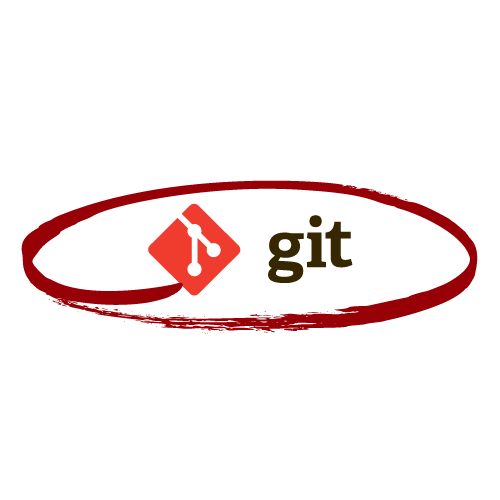
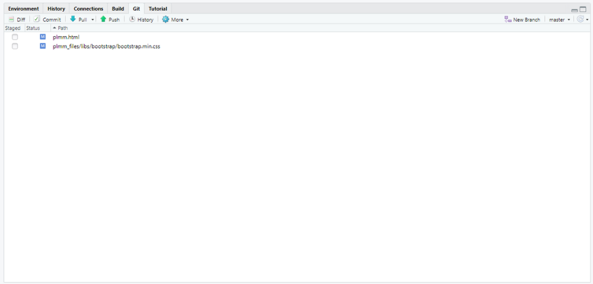
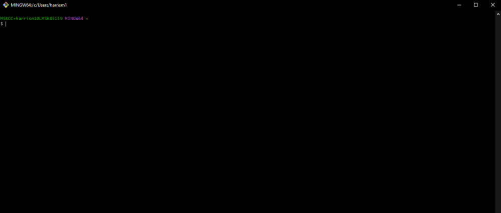
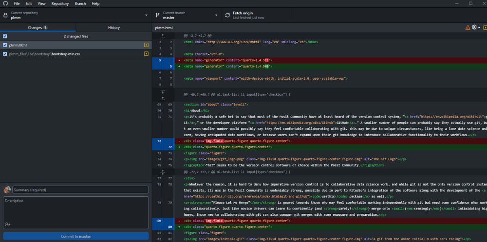
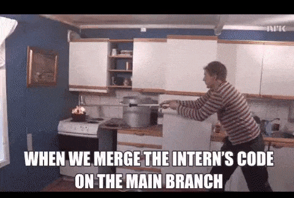
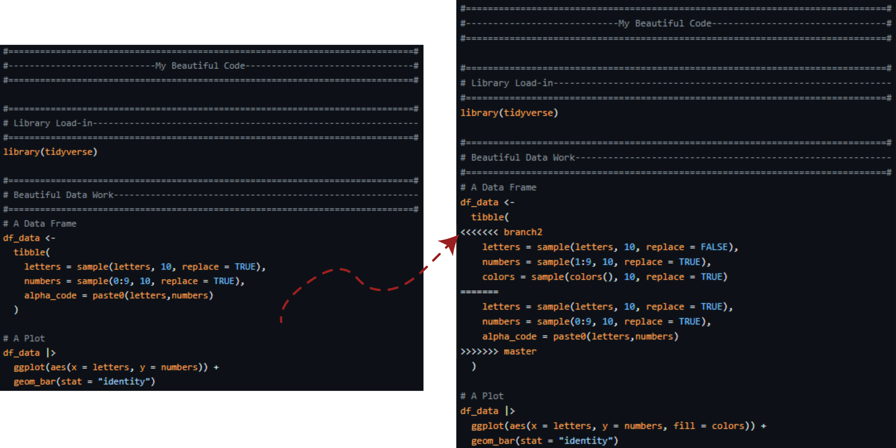
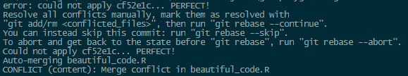
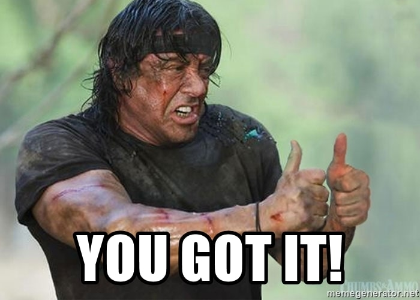

About
It’s probably a safe bet to say that most of the Posit Community have at least heard of the version control system, “Git,” or the developer platform “GitHub.” A smaller number of people can probably say they actually use Git, but an even smaller number would possibly say they feel comfortable collaborating with Git. This may be due to unique circumstances, like being a lone data science unicorn, having antiquated data workflows, or because users can’t expand upon their Git knowledge to introduce collaborative functionality to their workflows.

Whatever the reason, it is hard to deny how imperative version control is to collaborative data science work, and while Git is not the only version control system that exists, its use in the Posit Community is undeniably strong, possibly due in part to RStudio’s integration of the software along with the development of the usethis package as well.
“Please Let Me Merge” is geared towards those who may feel comfortable working independently with Git but need some confidence when working collaboratively. Just like novice drivers can learn to confidently (and safely!) merge onto (seemingly) intimidating highways, those new to collaborating with Git can also conquer Git merges with some exposure and preparation.

Interacting With Git
For those of us that use Git, we have a few options when it comes to interacting with Git and GitHub:
RStudio Graphical User Interface (GUI)
For R users, this may be the most popular method of interacting with Git. Undoubtedly due to RStudio’s ability to shield users from the traditional terminal view. Users that interact with Git in this way only need to save their work, commit their changes, and push up to their repository that’s probably on GitHub.

Command Line Terminals
For the hardcore Git veterans (or for those that just want a ‘fluff-free’ Git experience), the command line may be their tool of choice. RStudio users have the option of interacting with their system’s terminal within RStudio; but Git Bash and standard terminal shell programs like PowerShell for Windows and Terminal for macOs can also be used outside of RStudio.

Git GUI Clients
For the “fluffiest” Git experience, users can use third-party Git GUI clients like GitHub Desktop or GitKraken. Git GUI clients can be free or proprietary and usually have some added benefits like improved error messaging, accessibility to most Git commands and functionality, and in some cases added visualizations to assist with general version control and commit histories.

Which Method Should I Use?
Whatever you feel most comfortable with. Unless the organization you are collaborating with explicitly states you must use one method over the other, any method of Git interaction will provide the same results. The only time this may not be true is if your work requires very advanced Git operations. Most work does not fall into this category. Remember, you don’t get brownie points for using a terminal, and your Data Science ‘card’ won’t be revoked if you prefer a third-party GUI client. Use whatever takes the least amount of time and pain based on your experience and skill set.
What is git merge And Why Are People Afraid of It?
At it’s core, git merge is simply how users can join two or more development histories, (AKA: Git branches) together. git merge is essential to working collaboratively in Git simply because it is the proper way incorporate Git’s functionality of version control into your work. When used correctly, this allows users to safely modify existing work or create additional work that can be safely incorporated into an online repository with which others can work and interact.
If git merge is simply just joining branches together…it can’t be all that bad right?
Nope. Wrong. Please understand that this is a overly simple explanation of what git merge is. One can literally spend hours reading documentation/content on the different types of Git merges. It is a rabbit hole reserved only for those brave enough to enter.
It is without a doubt that most people who are afraid of Git merges are afraid because of git merge conflicts; The bane of every Git user’s existence.

What is A git merge Conflict?
As intimidating as it is…the concept of a git merge conflict is actually quite simple:
“Merge conflicts occur when competing changes are made to the same line of a file, or when one person edits a file and another person deletes the same file.”
- GitHub Docs (“Resolving a merge conflict using the command line”)
So if it’s this simple…why is it intimidating? Probably because your once beautiful-looking code can get riddled with greater-than >>>> and less-than <<<< signs seemingly without warning like this:

And depending on how you are choosing to interact with Git, you can also get blocks of text like this in the terminal or RStudio GUI:

Maybe it’s the syntax, or the way the word CONFLICT is in all caps here, or maybe because Git asks us if we want to abort our merge attempts; when this wall of text graces users’ screens, it can be enough to strike fear in the hearts of many. What Git newbies fail to realize, though, is that there is nothing to be afraid of. This is simply Git’s way of nicely saying, “Hey. I’m only some program, and I’m actually not smart enough to figure out which version of this thing is the version you want. Can you please choose so I can finish up for you?“
In this instance, the user is given the proverbial ‘steering wheel’ and must decide on how to continue the merge. It is my belief that this stresses people out either because of the ‘theatrics’ of it all (I mean, how would you feel if you thought a computer was yelling at you in caps?), or because they are afraid to make a decision about what needs to move forward. This all used to be true for me…until I had to start using Git to work with people…and that work had hard, demanding deadlines that required me to figure these things out…fast.
git merge Conflicts in the Wild
Let’s face it. Those who may feel uncomfortable collaborating with Git simply may not need to, or they can usually find some workaround (like burning down their local repos faster than Jenny Bryan will burn your computer down if you dare use setwd() in R) to make things work for them. In my personal case, I had to get really familiar with Git REAL fast because I needed to collaborate with others and ‘collaborate with myself’ across LOTS of branches within one project.
Working as a data scientist with oncology clinical trial data is a challenging but rewarding position that afforded me lots of hours of pain and tears in my Git terminal that left me not only saying, “Please let me merge before I cry,“ but also things like “Why did you change this?”, “WHAT are you doing?” and probably some creative expletives I won’t repeat here because I’m a professional.
While it would be difficult to list every time I’ve encountered a merge conflict in the wild, a few painful memories come to mind:
The time I came back from parental leave for six months and started working on stuff before rebasing or pulling from
main/masterThe time one ‘urgent’ thing was asked for on one branch, but then a ‘more urgent’ thing was asked for and I switched to the ‘more urgent’ branch without committing the ‘urgent’ thing.
The time my compulsive tendencies forced me to make ✨formatting and style changes✨to code someone had already pulled and started working on.
The time karma got me for working on a personal project on my work computer, but then also working on the personal project on my personal computer seperately, and then having to deal with the aftermath.
Preparing For Better Merges
While it is probably unrealistic to say you can completely avoid Git merge conflicts there are definitely things you can do to better set yourself up for success. Just like with learning how to drive a car, you can absolutely (and should sometimes reference) a driving manual (or some documentation on Git merges); but it can’t be argued that the best way to learn how to drive is by practicing driving.
When you think about it, even seasoned drivers with years of experience aren’t perfect. Sometimes things happen. Accidents. Unexpected road blocks. Annoying construction detours. The difference though between beginner and seasoned drivers are experience and exposure. Every time you are exposed to a different challenge or scenario you can use the experience to better prepare yourself for the next time.
So while I can’t provide a fool-proof guide on completely avoiding Git merge conflicts, I can provide a few highlights of things I’ve learned while working collaboratively with Git:
Think before you start working or touching ANYTHING. Did you pull? Are you on the right branch? Don’t let external “fires” fluster you before you start.
Don’t leave anything uncommitted if you can help it. Uncommitted changes can and will follow you around if you let them.
Communicate with your collaborators. If you know someone is working on something, try to avoid working on that file if possible. Sometimes this can’t be avoided, but it can save a lot of problems if you are able to cleanly “hot-potato” your work between collaborators.
Decide a work style that works for your situation when it comes to making commits. Committing frequently on huge tasks is great, but what happens when you need to merge and there’s conflicts with EACH. AND. EVERY. COMMIT? Will squashing your commits be appropriate or will you be ready to go through and resolve each commit if need be?
While this topic may be appropriate for those who can already minimally interact with Git, I hope it would still resonate with Git users of all skill levels and might even introduce some concepts for complete beginners to keep in the back of their minds. This will be for anyone who has ever held their breath after they pushed or pulled at the terminal, those who are seasoned veterans and may chuckle as they’ve undoubtedly experienced the pain of merge conflicts, and those who may need that little extra push to tackle that merge conflict the next time they come face-to-face with it.
